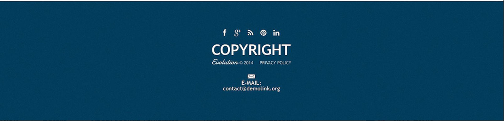

Hello. My name is John Smith and I'm a student at Full Sail University that is majoring in Web Design and Development. I'm currently enrolled in the Web Standards Project course, which is being taught by Professor Josh Bloom. What you see here is the product of my first assignment in this course: Building a Library. Here is where I'll keep portfolio of my components and other things during the course of this class.
Component Library
1. Header
Target Audience
Well, considering it's a night club, I would guess that the target age group would be males and females ages 25-40. Out of college. Or at least not full-time students. Probably don't have any kids. Or their kids are old enough to not require a babysitter. I don't see many individuals past 40 strutting around a night club, but (what do I know?) it's possible.
Client/User Needs
The client's need is to promote their night club. Spread recognition by having a large header and large logo. The user is looking for something recognizable. Something fun. A night club.
Design Critique
Large bold text captures your attention. Screams "party." The red bomb gives off a feeling of energy. Which makes sense, considering they want the person to feel as though their spot is "the" spot. In other words: the spot that is "DA BOMB."
2. Navigation
Target Audience
Kind of hard to nail a specific audience down here, as the navigation is pretty standard. But I suppose that since the text is small and dark, it could be hard to read. Which means this probably isn't an elder-friendly design. So perhaps people ages 16-50 (or anyone older with a decent pair of glasses), could be considered part of the general audience.
Client/User Needs
The client's goal is to get the user to learn about their company and maybe ultimately get invovled in some fashion. Which I guess would also be the user's goal. To find out this information.
Design Critique
Going along with the audience, the dark colors may be more appealing, as it seems that younger people are more attracted to neutral colors. Especially black. The grainy texture overlay may give off a sense of grit, which may attract the more mature young users. Otherwise, this seems like a pretty standard design. Can be used for just about anything.
3. Search
Target Audience
Once again here, it seems like maybe this design is directed towards a younger audience. 12-25. Females in particular (I know that may be stereotyping), because of the pink color which is typically associated with all things girly. (Unless you're a dude with one of those "Real Men Wear Pink" shirts, which I think are just silly...). The "create an account" functionality may be directed to slightly older females who are capable of creating and using e-mail (but, then again, these days just about anybody knows how to do that, so I wouldn't be suprised if I was wrong.)
Client/User Needs
With an emphasis on the "create an account" and search icon (the white color contrasted with the pink), the client's need may be to get the user to do exactly that: search their site for products or register to become a member of their store, making it easier for users to come back and buy more products (assuming this is for a online store of some sort). The user's goal would ultimately be to buy someting.
Design Critique
Considering pink is just a slightly altered version of the color red, I guess it can evoke the same feelings of energy and excitement that red does. Gets the customer excited about their purchase and motivates them to buy more. The all-caps lettering is a nice way to compensate for the small text size and still capture the visitor's attention.
4. Featured
Target Audience
Well, this is a gaming website design, so the audience would probably be around ages 11-40, male and female. Obviously directed towards those interested in video games, or are involved in the gaming industry in some fashion. Basically people who play or make games, or find them fascinating as an art form. Or are just interested in the business aspects and are curious about the release of major games.
Client/User Needs
Client wants the user to get interested in their game. Build up hype so that they'll want the game. The user wants to learn more about the game so that they'll eventually decide whether or not to buy it.
Design Critique
Again, small text. Large image. Maybe more appealing to the younger crowd, but I really think anybody can get behind the design. Large text emphasizes the game's title over everything else. The "read more" button is outlined and significantly large. Background image is large, but not overpoweringly so since the image seems dimmed out. The focus really is the text in the center of the image.
5. Feed
Target Audience
Looks like horse-related riding equipment. Could be for anybody, but based on the sport, I'd imagine a slightly older audience. Males and females ages 18-50. People old enough who have money to buy that equipment.
Client/User Needs
Client wants to sell their products, obviously. User is trying to gather information and make a purchase.
Design Critique
Another neutral color being used as a background (brown). Doesn't have much meaning, though some can associate horses with the color brown I suppose. Or maybe even old-timers. Or countrysides. You can justify the use of this color however you want.
6. Services
Target Audience
16+. Anyone who uses/can afford electronics such as computers and tablets. Maybe slightly tech or computer-savvy. Enough to understand concepts such as data recovery and be able to navigate internet services and online support.
Client/User Needs
Client's goal is to provide customer service. (That's literally what the component is.) User's goal is to find information related to the problem they're having.
Design Critique
Good iconography. Professional and clean design. Using blue to give off a sense of trustworthiness and calm in the midst of the customer's predicament.
7. Testimonials
Target Audience
Based on the pictures of the people who gave testimonials, it looks like slightly older crowd. People in their 40's. People with enough money to buy into whatever service this and enough time to leave a testimonial. Maybe good-natured considering testimonials are typically positive.
Client/User Needs
Client wants to spread good word about their company, which will ultimately result in more sales. User wants to see feedback from people just like themselves, which will aid in them making an informed purchase.
Design Critique
Like I said before, blue gives off an air of trust, which is critical for testimonials. The big quote icons lets the user know that these are the exact words of the customers that haven't been tampered with in any way.
8. Sign Up
Target Audience
Gaming website, with people who are old enough to create and use an email (and that varies), and are interested in video games. There is really no specific crowd or gender.
Client/User Needs
Community outreach. Get the user to be a part of your website's community. User's goal is to get specific membership benefits. To be filled in on the comings and goings of that particular website. Especially if they're interested in the newsletter option.
Design Critique
Very simplistic. Typical form design. No significant use of color. Layout and font-styles are standard. Colors of the social icons are only in relation to the social network's company colors.
9. Meet The Team
Target Audience
It's some sort of publication, and without knowing what it is, I can't really guess the target audience. The font and color choices don't really give anything away.
Client/User Needs
Probably community outreach again. Get the user familiar with the people who run the brand. Especially when it comes to getting to know the writers for a publication. They pretty much are the brand. User's goal is to be informed.
Design Critique
Red is used to make the editor-in-chief stick out. And for good reason (because he's the EIC). But red can also give off a sense of passion. Which would mean that these writers are passionate about their jobs. Can also give off excitement, as in the user can get excited to learn about the members of the team that makes up this publication.
10. Footer

Target Audience
No one in particluar. The barer the design is, the harder it is to pinpoint an audience. Especially without any sort of context.
Client/User Needs
Client wants feedback from the user. Hence the contact info and social icons. User wants to give feedback.
Design Critique
The blue color compliments the overall professional design. But otherwise, nothing sticks out in particular. The copyright is very big though, for what reason, I don't know.